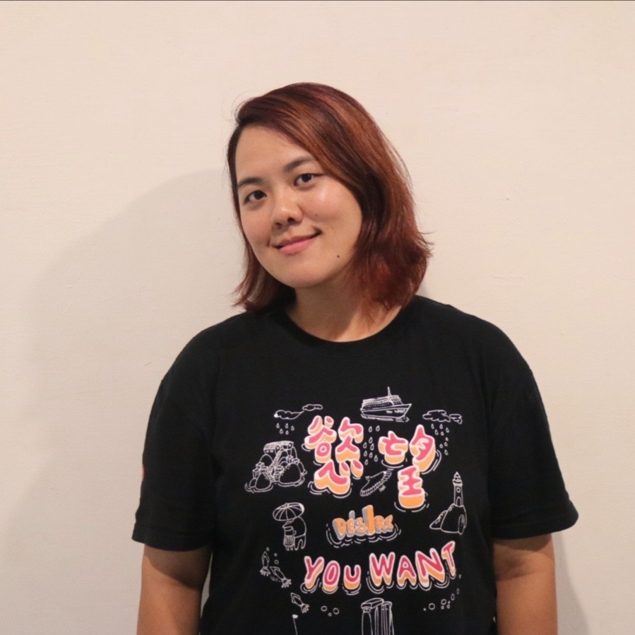
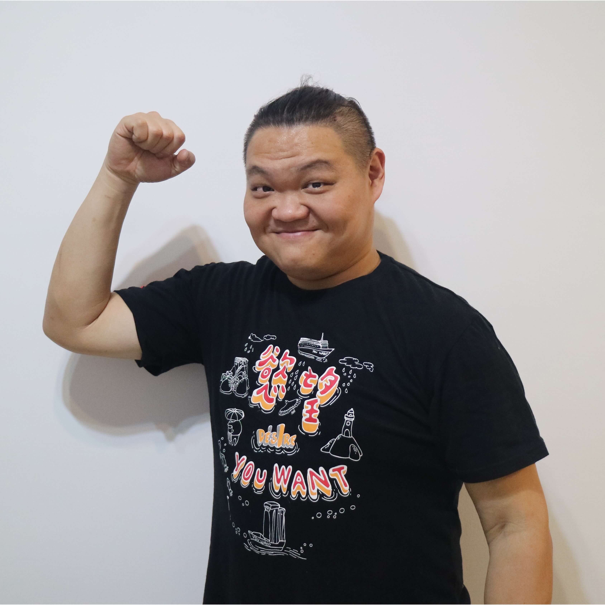
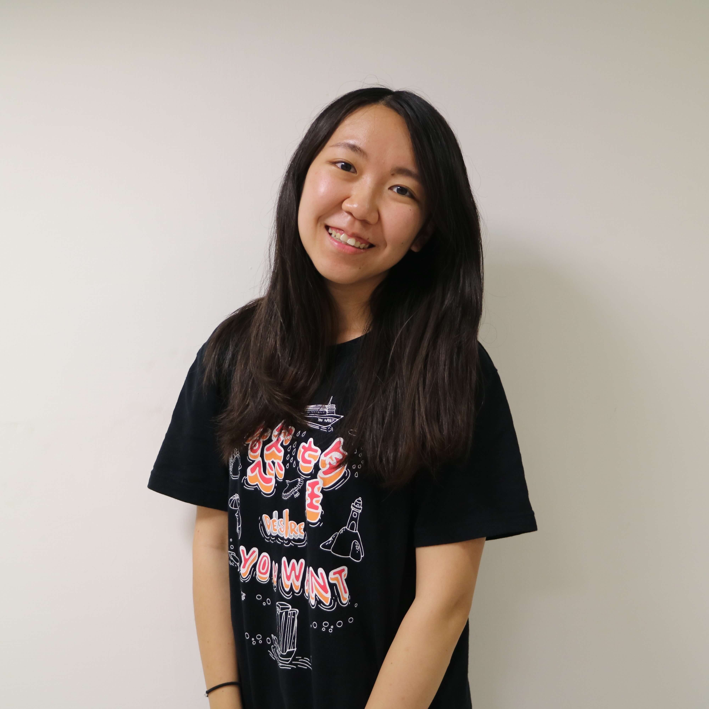
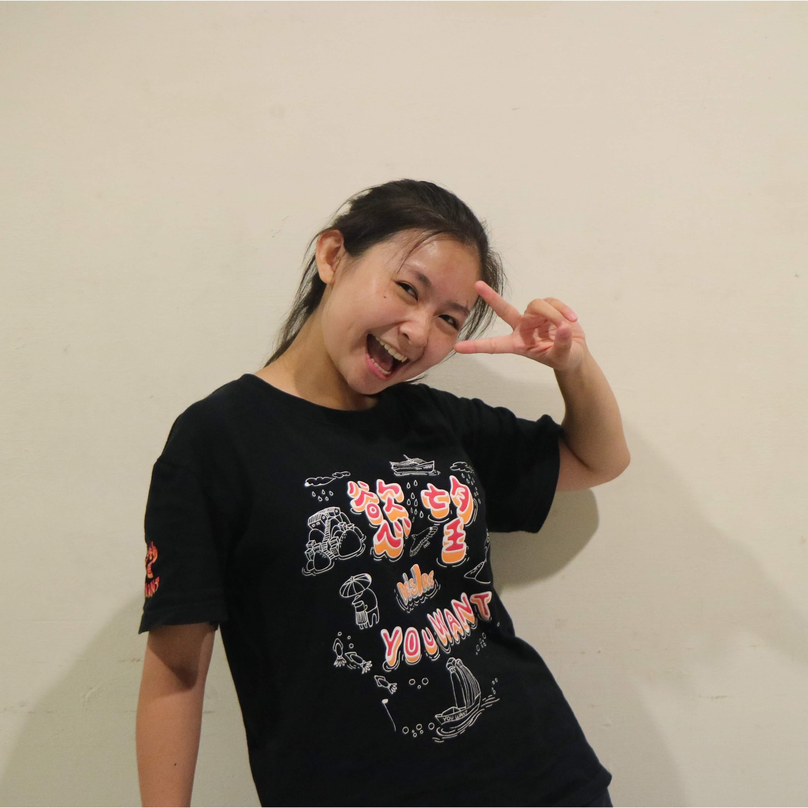
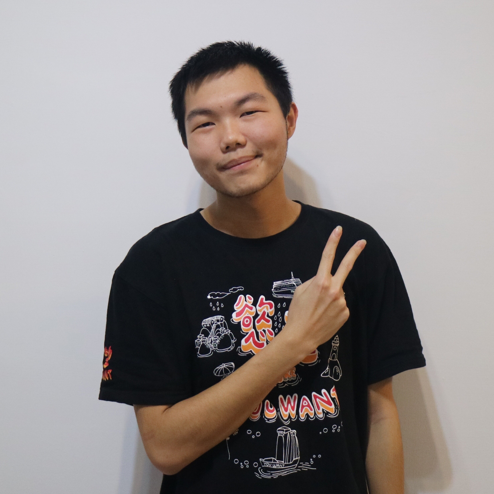
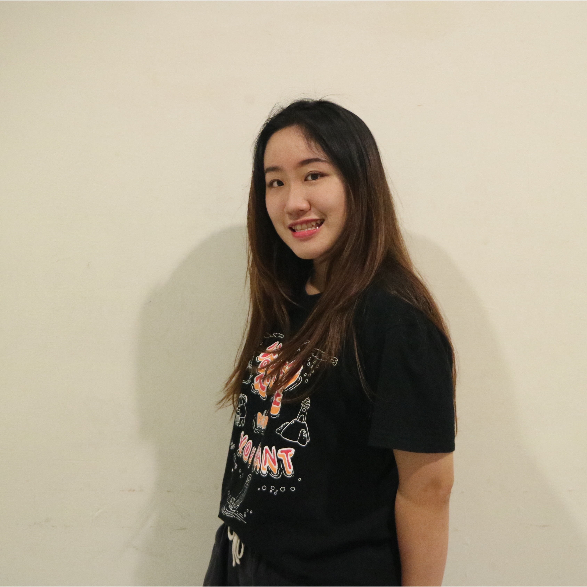
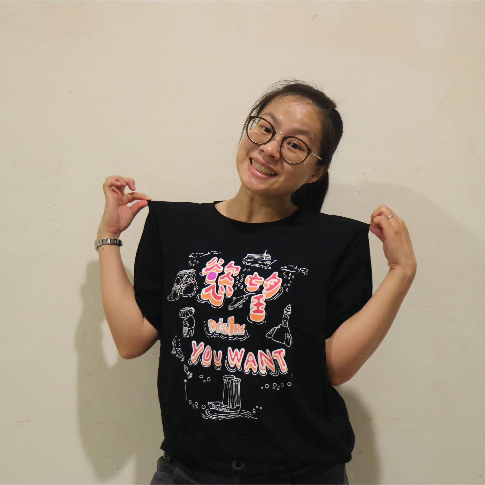

慾望成員｜Team
首頁
Home
最新消息
News
慾望成員
Team
慾望作品
Works
聯絡慾望
contact

團長｜黃品文

技術總監｜葉禹廷

行政｜游喻仁

專案執行｜鄭孟庭
團員｜周彥邦

團員｜陳彥竹

團員｜李沛湘

宣傳｜林佳慧
1989年生
畢業於中國文化大學
中文系創作組
劇團主要創作者
感性擔當
專長是在謝幕爆哭
口頭禪是「真的是太好了～」
黃品文｜團長、主要編創者、藝術總監
經歷
2020 第二屆城市劇場行動【走‧光】－《時‧行過的所在》編導
2020 藝術扎根－基隆市社區共演計畫《咱的聲音》編導
2019 年度大戲 慾望劇團《鐵路邊的紅花》導演
2019 兒童互動劇《森林國小不一樣》導演
2019 慾望劇團15周年 – 在《基》演出 製作人/編導
2018 年度大戲 慾望劇團《雨信委託行》 製作人/編導
2018 藝術進區－基隆市表演藝術下鄉巡演計畫 製作人
2018 慾望劇團與青劇節校友們《不存在俱樂部》編導
2018 基隆青少年戲劇節 活動執行長
2017 兒童互動劇《海底的守護神》導演
2017 基隆青少年戲劇節 製作人暨執行長
2016 讀演劇人X夢劇社X慾望劇團《當基隆撞上澳門》共同導演
2016 雞籠中元祭《中元怪奇博物館驚魂記》編導
2016 慾望劇團《野狼三兄弟與豬公主》製作人/編導/演員
2015 慾望劇團 《Family in Keelung》製作人/編劇/演員
1980年生
畢業於中國文化大學國劇系
劇團主要創作者
劇團技術擔當
負責解決大小演出所有技術問題
最近新身份是爸爸
標準女兒控
葉禹廷｜技術總監、主要編創者
經歷
2020 第二屆城市劇場行動【走‧光】－《時‧行過的所在》技術統籌
2019 慾望劇團年度大戲《鐵路邊的紅花》舞台監督
2019 慾望劇團與青少年合演《新生命》編導/燈光設計
2018 慾望劇團與青劇節校友們《不存在俱樂部》燈光設計
2012 基隆市雨韻合唱團客家三部曲 燈光設計
2011 大榔頭兒童劇團『莫札特，誰！』舞台監督
2011 基隆市雨韻合唱團傑出團體演出 燈光設計
2010 大榔頭兒童劇團『搖滾影子』舞台監督
2010 基隆市中東肚皮舞協會聯合舞展 燈光設計
2009 大榔頭兒童劇團『小人國』燈光設計
2009 青藝盟『愛的大逃殺』燈光設計
2009 日本舞踏發展協會『舞俑』燈光設計
2008 慾望劇團『惡戲』導演
2007 華崗藝展『鳶家路窄』舞台監督
2007 無夢樓劇團『李爾的假死遊戲』日本演出燈光設計
2006 文大角落藝術節『何處歸鄉』燈光設計
1992年生
畢業於國立嘉義大學生物資源系
劇團理性擔當
沒有演出的日子都在當生態老師
喜歡所有人類以外的生物
準人妻
游喻仁｜行政
經歷
2020 基隆青少年戲劇節 執行長
2020 暑假You Want 抓馬－兒童戲劇營 主持人/隊輔
2020 寒假You Want 抓馬－兒童戲劇營 隊輔
2019 年度大戲 慾望劇團《鐵路邊的紅花》製作人
2019 慾望劇團與青少年合演《新生命》製作人
2019 暑假You Want 抓馬－兒童戲劇營 隊輔
2019 基隆青少年戲劇節 執行長
2019 寒假You Want 抓馬－兒童戲劇營 隊輔
2018 年度大戲慾望劇團《雨信委託行》執行製作
2018 暑假You Want 抓馬－兒童戲劇營 隊輔
2018 慾望劇團與青劇節校友《不存在俱樂部》 舞台監督
2018 基隆青少年戲劇節 執行助理
2018 慾望劇團兒童互動劇《海底的守護神》 音控
2017 慾望劇團《雨信委託行》演藝廳版 製作助理
2017 基隆青少年戲劇節 舞監助理
1998年生
就讀於中國文化大學國劇系
不是基隆人
但對基隆美食超了解
標準吃貨
鄭孟庭｜專案執行
經歷
2020 慾望之夜II－《北方的聲音》演員
2020 第二屆城市劇場行動【走‧光】－《時‧行過的所在》演員/執行製作
2020 藝術扎根－基隆市社區共演計畫《咱的聲音》演員
2020 暑假You Want 抓馬－兒童戲劇營 隊輔
2020 慾望之夜I－《那些看不見的》編創
2020基隆青少年戲劇節 前台長
2019 年度大戲 慾望劇團《鐵路邊的紅花》演員
2019 兒童互動劇《森林國小不一樣》演員
2018 年度大戲 慾望劇團《雨信委託行》 演員
1997年生
就讀於國立臺灣海洋大學
海洋環境資訊所
喜歡一個人騎車去九份
講話很常破音
周彥邦｜團員
經歷
2020 慾望之夜II－《程車之計》編創
2020 基隆青少年戲劇節 執行助理
2020 暑假You Want 抓馬－兒童戲劇營 隊輔
2020 慾望之夜I－《褐・群咖啡》編創
2019 基隆青少年戲劇節 宣傳長
2019 三重空軍一村《眷村迎新年》演員
2019 慾望15週年－在《基》演出 演員
2019 寒假You Want 抓馬－兒童戲劇營 隊輔
2018 基隆志工表揚大會《團圓》演員
2018 慾望劇團兒童互動劇《森林國小不一樣》演員
2018 三重空軍一村【眷村角色扮演】演員
2018 苗栗快閃《團圓》演員
2018 慾望劇團與青劇節校友們《不存在俱樂部》前台長
2018 暑假You Want 抓馬－兒童戲劇營 隊輔
2015 劇在東北角－《轉角的兩人》編導
1999年生
就讀於華梵大學機電系
劇團最默默的人
口頭禪是「實際上」
陳彥竹｜團員
經歷
2020 慾望之夜II－《北方的聲音》編創
2020 藝術扎根－基隆市社區共演計畫《咱的聲音》排練助理
2020 基隆青少年戲劇節 舞監助理
2020 暑假You Want 抓馬－兒童戲劇營 隊輔
2019 三重空軍一村《眷村迎新年》演員
2019 慾望15週年－在《基》演出 演員
2019 寒假You Want 抓馬－兒童戲劇營 隊輔
2018 三重空軍一村【眷村角色扮演】演員
2018 慾望劇團與青劇節校友們《不存在俱樂部》演員
2017 雞籠中元祭開幕舞劇《共願聚香火》演員
1998年生
就讀於崇右影藝科技大學
表演藝術系
專長是拍限時動態
教會ㄉ孩子
李沛湘｜團員
經歷
2020 慾望之夜II－《阿姊的戲院攻略》編創
2020 基隆青少年戲劇節 宣傳長
2020 暑假You Want 抓馬－兒童戲劇營 隊輔
2020 慾望之夜I－《褐・群咖啡》演員
2019 慾望劇團與青少年合演《新生命》演員
2019 慾望15週年－在《基》演出 演員
1986年生
慾望小編
看不出來是一個孩子的媽
慾望鐵粉&團長腦粉
李沛湘｜團員
經歷
2020 劇團行銷宣傳
2020 藝術扎根－基隆市社區共演計畫《咱的聲音》社區演員